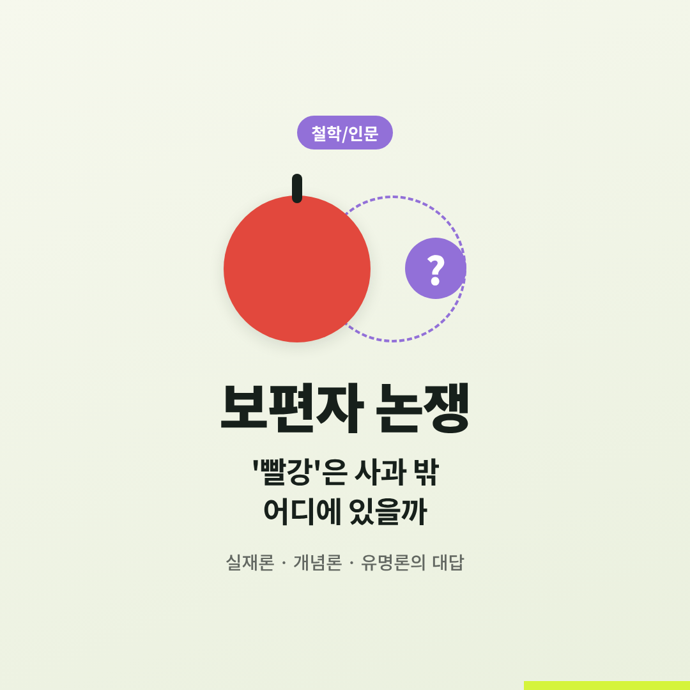
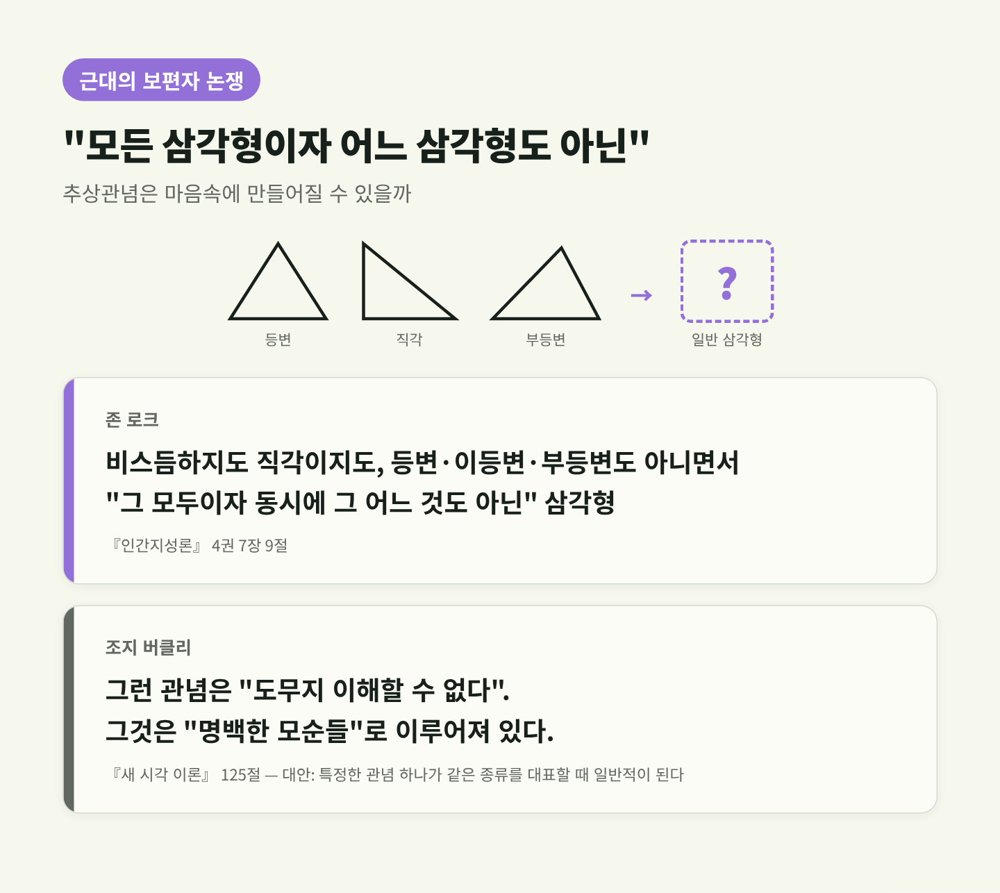

보편자 논쟁 — '빨강'은 어디에 있을까, 실재론·개념론·유명론의 대답

빨간 사과, 빨간 장미, 빨간 노을이 있습니다. 셋은 서로 다른 사물인데, 우리는 모두에게 똑같이 '빨갛다'는 말을 씁니다. 이번 글에서는 이 '공통된 무엇', 곧 보편자가 어디에 존재하는지를 두고 2천 년 넘게 이어진 보편자 논쟁을 실재론·개념론·유명론의 세 갈래로 정리해 보겠습니다.
먼저 결론부터 짧게 적습니다.
- 실재론: 빨강은 실제로 있다. 사물과 떨어져 있든(플라톤), 사물 속에 있든(아리스토텔레스).
- 개념론: 빨강의 일반성은 우리 마음속 개념에만 있다.
- 유명론: 실제로 있는 것은 이 사과, 저 장미 같은 개별자뿐이다.
■ 질문의 출발점 — 같은 이름, 다른 사물
철학에서 보편자(universals)는 여러 개별자가 함께 가진다고 여겨지는 것을 말합니다. '빨강', '인간', '삼각형' 같은 것들입니다. 반대편에는 개별자, 곧 이 사과와 소크라테스라는 한 사람이 있습니다.
인터넷 철학 백과(IEP)는 보편자를 상정하는 이유를 이렇게 설명합니다. 서로 다른 사물이 왜 같은 성질을 가지는지 설명하기 위해서라는 것입니다. 사과와 루비가 둘 다 빨간 까닭은 '빨강'이라는 하나를 공유하기 때문이라는 식입니다.
문제는 그 '하나'의 정체입니다. 사과를 다 먹어 치워도 빨강은 남을까요. 세상의 빨간 것이 모두 사라지면 빨강도 함께 사라질까요.
다만 한 가지는 미리 말씀드려야겠습니다. 스탠퍼드 철학 백과(SEP)의 중세 보편자 항목을 쓴 기울라 클리마는 이 세 갈래 분류를 스스로 "조잡한" 분류라고 부릅니다. 실제 철학자들의 입장은 훨씬 섬세하게 겹치고 갈라집니다. 아래 내용은 지도로 보시면 좋겠습니다.
■ 플라톤과 아리스토텔레스 — 사물 밖이냐, 사물 속이냐
논쟁의 뿌리는 고대 그리스에 있습니다.
플라톤은 이데아(형상)를 내세웠습니다. 형상은 시간과 공간 밖에 있고, 개별 사물은 형상에 '참여'함으로써 그런 성질을 가진다고 보았습니다. 두 사과가 빨간 것은 '빨강의 형상'에 함께 참여하기 때문입니다.
흥미롭게도 플라톤 자신이 『파르메니데스』에서 이데아론의 난점을 제기했습니다. 훗날 '제3인간 논증'이라 불리는 반론이 대표적입니다.
제자 아리스토텔레스는 스승의 이데아론을 일관되게 거부했습니다. 독립된 형상은 없고, 보편적인 것은 개별 사물 '안에' 있다는 입장입니다. "플라톤은 친구지만 진리가 더 좋은 친구다"라는 라틴어 격언이 이 대립을 두고 전해집니다.
중세의 용어로 정리하면 이렇습니다.
- 사물 이전의 보편자(ante rem): 사물보다 먼저, 사물과 떨어져 있는 보편자
- 사물 속의 보편자(in re): 개별 사물 안에 깃든 보편자
- 사물 이후의 보편자(post rem): 사물을 겪은 뒤 마음이 만든 개념
플라톤은 『파이드로스』(265e 부근)에서 사물을 "자연적 마디가 있는 곳에서" 나누되, "서툰 고기 써는 사람처럼" 부수지 말라고 했습니다. 제대로 된 분류가 세계의 구조를 따라야 한다는 생각은 이렇게 오래되었습니다.
■ 포르퓌리오스가 남긴 세 질문, 보에티우스가 건넨 답
이 문제가 중세의 핵심 쟁점이 된 계기는 작은 입문서 한 권이었습니다. 신플라톤주의자 포르퓌리오스가 아리스토텔레스 『범주론』 입문으로 쓴 『이사고게』입니다.
그는 유(類)와 종(種)에 관해 세 가지를 묻고는, 답을 미룹니다.
- 유와 종은 실재하는가, 아니면 생각 속에만 있는가
- 실재한다면 물체인가, 비물체인가
- 감각되는 사물과 떨어져 있는가, 그 안에 있는가
이유는 짧았습니다. 그런 문제는 심오해서 "더 큰 탐구"가 필요하다는 것입니다.
이 숙제를 라틴 세계에 전한 사람이 보에티우스입니다. 그는 먼저 기준을 세웠습니다. 보편자라면 여러 개별자에게 '전체로, 동시에, 그 실체를 이루는 방식으로' 공통되어야 한다는 것입니다. 그리고 그런 단일한 실재는 있을 수 없다고 논증했습니다.
그의 해법은 아리스토텔레스 쪽이었습니다. 보편자는 마음이 추상을 통해 만든다는 것입니다. 추상이란 실제로는 떼어낼 수 없는 것을 생각 속에서 떼어내는 일입니다. 다만 플라톤의 견해는 "더 높은 철학에 속하는" 문제라며 여지를 남겨 두었습니다.
■ 중세의 격돌 — '음성의 바람'에서 오컴의 면도날까지
11세기 말, 로스켈리누스는 극단으로 나아갔습니다. 유와 종은 단어(voces), 이른바 "음성의 바람(flatus vocis)"일 뿐이라는 것입니다. 자연에는 개별자만 있다는 이 입장이 훗날 '유명론'이라는 이름의 뿌리가 되었습니다. 다만 그의 생각은 거의 전부 반대자인 안셀무스와 아벨라르의 보고로만 전해집니다. 얼마나 극단적이었는지는 지금도 해석이 갈립니다.
그의 제자 아벨라르는 한층 정교했습니다. 그는 스승 샹포의 기욤이 내세운 실재론을 조목조목 논박했습니다. 그리고 "보편자는 이름(nomen) 또는 의미 있는 말(sermo)"이라고 정리했습니다. 공기를 울리는 소리 자체가 아니라, 의미를 지닌 말이 보편적이라는 뜻입니다.
그렇다면 '인간'이라는 말은 무엇을 근거로 여러 사람에게 붙을까요. 아벨라르의 답은 '상태(status)', 곧 '인간임'이었습니다. 그것은 하나의 사물은 아니지만, 이름을 붙이게 하는 실재적 원인입니다. 장미가 한 송이도 남지 않으면 '장미'는 더 이상 보편적이지 않다는 그의 예시도 유명합니다.
13세기의 토마스 아퀴나스는 흔히 온건 실재론자로 분류됩니다. 인간성은 실재 속에 존재하지만, 거기서는 보편적이지 않습니다. 소크라테스와 플라톤은 각자 자기 인간성을 가집니다. 그 본성이 지성에 의해 추상될 때 비로소 보편적 개념이 됩니다. 철학자 제프리 브라워는 이를 강한 실재론과 유명론 사이의 "중도"라고 부릅니다.
둔스 스코투스는 실재 쪽으로 한 걸음 더 들어갑니다. 인간성 같은 '공통 본성'은 여러 개체 속에 실제로 있으며, 수적 단일성보다 '덜한 단일성'을 가진다고 보았습니다. 그렇다면 무엇이 이 사람을 바로 이 사람으로 만들까요. 그가 내놓은 답이 '이것임(haecceity)'입니다.
14세기의 윌리엄 오컴은 판을 뒤집었습니다. 존재하는 것은 단일한 사물뿐이고, 보편자는 보편 개념과 그것을 표현하는 말뿐이라는 것입니다. 그는 말과 글은 관습적이지만, 개념은 대상을 자연적으로 가리키는 기호라고 보았습니다. 옛 방식이 "명사의 수만큼 존재자를 늘린다"는 것이 그의 비판이었습니다.
여기서 유명한 '오컴의 면도날'을 짚고 넘어가야겠습니다. SEP 오컴 항목에 따르면, 그 정신은 오컴의 것이 맞습니다. 그러나 "필요 이상으로 존재자를 늘리지 말라"는 익숙한 문구는 오컴의 글에 없습니다. 게다가 오컴은 면도날 하나로 보편자를 잘라낸 것이 아니었습니다. 당대 실재론이 논리적으로 앞뒤가 맞지 않는다고 논증한 것입니다.
그의 '새길(via moderna)'은 15세기 유럽 주요 대학에서 강력한 지지를 얻었습니다. 훗날 도밍고 소토는 이렇게 평했다고 합니다. 실재론은 이해하기 어렵고, 유명론은 믿기 어렵다고.
■ 근대 — 로크의 삼각형과 버클리의 반문
예전엔 신학과 논리학의 문제였습니다. 근대에 와서는 '마음이 어떻게 일반 관념을 갖는가'라는 인식의 문제가 되었습니다.
존 로크는 우리가 개별 경험에서 공통점만 추려 '추상 관념'을 만든다고 보았습니다. 『인간지성론』 4권 7장 9절에서 그는 삼각형의 일반 관념을 이렇게 묘사합니다. 비스듬하지도 직각이지도 않고, 등변도 이등변도 부등변도 아니면서, "그 모두이자 동시에 그 어느 것도 아닌" 삼각형이라고.
조지 버클리는 바로 이 구절을 붙잡았습니다. 여러 번 시도했지만 그런 관념은 "도무지 이해할 수 없다"고, 그것은 "명백한 모순들"로 이루어져 있다고 반박했습니다(『새 시각 이론』 125절). 그의 대안은 이렇습니다. 특정한 삼각형 하나의 관념이 같은 종류의 다른 것들을 대표하는 데 쓰일 때 일반적이 된다는 것입니다. 『인간 지식의 원리』 서론에서 그는 이름이 대수의 문자처럼 쓰인다고도 말합니다.

■ 현대 — 콰인, 암스트롱, 그리고 트로프
20세기에 이 논쟁을 다시 불러낸 글이 콰인의 「무엇이 있는가에 관하여」입니다. 1948년 『Review of Metaphysics』에 실렸습니다.
콰인은 가상의 논적 McX를 등장시킵니다. McX는 빨간 집, 빨간 장미, 빨간 노을이 있다는 상식에서 '빨강이라는 속성'을 끌어냅니다. 콰인은 그 추론을 받아들이지 않습니다. 그리고 존재에 관한 유명한 기준을 내놓습니다.
"있다는 것은 변항의 값이 된다는 것이다."
우리가 받아들이는 이론이 무엇에 대해 '어떤 것이 있다'고 말해야만 참이 되는지 보라는 뜻입니다. 그는 중세의 세 관점이 20세기 수리철학에서 논리주의·직관주의·형식주의라는 새 이름으로 다시 나타난다고도 지적했습니다.
호주의 철학자 D. M. 암스트롱은 반대편에서 실재론을 되살렸습니다. 『보편자와 과학적 실재론』(1978)에서 그는 보편자가 있다고 주장하되, 플라톤처럼 사물과 떨어져 있지는 않다고 보았습니다. 보편자는 반드시 어떤 사물에서 실현되어야 합니다. 또 어떤 보편자가 있는지는 철학자의 직관이 아니라 과학, 궁극적으로 물리학이 정한다고 보았습니다.
그 사이에서 트로프 이론이 자리를 잡았습니다. 트로프는 '이 사과의 바로 이 빨강' 같은 개별적 성질입니다. 두 사과는 하나의 빨강을 공유하는 것이 아니라, 수적으로는 다르지만 정확히 닮은 빨강을 각자 가집니다. SEP는 D. C. 윌리엄스를 현대 트로프 논쟁의 아버지로 소개합니다.
유명론도 여러 갈래로 분화했습니다.
- 술어 유명론: '빨갛다'는 술어가 참되게 적용되기 때문에 빨갛다.
- 클래스 유명론: 빨강이란 빨간 것들의 집합이다.
- 유사성 유명론: 다른 빨간 것들과 닮았기 때문에 빨갛다.
각자 약점도 있습니다. 클래스 유명론은 '심장이 있는 것'과 '신장이 있는 것'처럼 구성원이 같은데 분명 다른 속성을 구분하기 어렵습니다. 술어 유명론은 설명을 회피한다는 뜻에서 '타조 유명론'이라는 비판을 받습니다. IEP는 오늘날 강한 실재론과 트로프 이론을 두 주요 경쟁자로 보는 견해를 소개합니다.
■ 오늘 이 논쟁이 여전히 쓸모 있는 이유
보편자 논쟁은 책 속의 옛 다툼만은 아닙니다. 우리가 세계를 나누는 방식, 곧 분류와 범주의 문제와 맞닿아 있습니다.
SEP의 자연종 항목은 자연종을 인간의 관심이 아니라 세계의 구조를 반영하는 묶음으로 설명합니다. 원자번호 79인 금, H2O인 물, 질량·전하·스핀으로 정의되는 전자가 예입니다. 반면 '흰 것들'은 자연종이 아니라는 밀의 지적도 함께 소개됩니다. 우리의 분류가 자연의 마디를 따르는지, 우리의 편의를 따르는지는 지금도 열린 질문입니다.
요즘의 머신러닝을 떠올려 보아도 비슷한 구도가 보입니다. 수많은 사례에서 공통 패턴을 뽑아 '고양이'를 구분해 내는 방식은 로크의 추상설이나 유사성 유명론을 연상시킵니다. 다만 이는 어디까지나 비유입니다. 모델이 보편자를 '발견'하는지, 우리가 붙인 이름표를 흉내 낼 뿐인지는 이 논쟁이 그렇듯 쉽게 결론 날 문제가 아닙니다.
정리하면 이렇습니다.
플라톤은 빨강을 사물 밖에, 아리스토텔레스와 아퀴나스는 사물 속에 두었습니다. 보에티우스와 개념론자들은 마음속에, 로스켈리누스와 오컴은 말과 개념에만 두었습니다. 현대에 와서도 암스트롱과 트로프 이론가, 유사성 유명론자는 여전히 서로 다른 자리를 가리킵니다.
아직 누구도 이겼다고 말하기는 어렵습니다. 그래도 이 논쟁이 남긴 것은 분명합니다 — '같다'는 말 한마디에 세계를 보는 방식 전체가 걸려 있다는 사실입니다.
사과를 다 먹고 나면 빨강은 어디에 남느냐고 물으신다면, 그 답을 고르는 순간 우리는 이미 어느 한 편의 철학자가 되어 있다고 답하겠습니다.
참고자료
- Gyula Klima, "The Medieval Problem of Universals", Stanford Encyclopedia of Philosophy — https://plato.stanford.edu/entries/universals-medieval/
- Mary C. MacLeod & Eric M. Rubenstein, "Universals", Internet Encyclopedia of Philosophy — https://iep.utm.edu/universa/
- Jenny Pelletier, "William of Ockham", Stanford Encyclopedia of Philosophy — https://plato.stanford.edu/entries/ockham/
- "Peter Abelard", Internet Encyclopedia of Philosophy — https://iep.utm.edu/abelard/
- "Roscelin of Compiègne", New Catholic Encyclopedia (Encyclopedia.com) — https://www.encyclopedia.com/religion/encyclopedias-almanacs-transcripts-and-maps/roscelin-compiegne
- Richard Cross, "Medieval Theories of Haecceity", Stanford Encyclopedia of Philosophy — https://plato.stanford.edu/entries/medieval-haecceity/
- Jeffrey E. Brower, "Aquinas on the Problem of Universals" — https://philarchive.org/archive/BROAOT-9
- Lisa Downing & David Hilbert, "Berkeley on meaning", Stanford Encyclopedia of Philosophy — https://plato.stanford.edu/entries/berkeley/meaning.html
- George Berkeley, An Essay towards a New Theory of Vision §125 (CELT) — https://celt.ucc.ie/published/E710001-002/text014.html
- W. V. O. Quine, "On What There Is" (1948) — https://www.uvm.edu/~lderosse/courses/metaph/OnWhatThereIs.pdf
- Gonzalo Rodriguez-Pereyra, "Nominalism in Metaphysics", Stanford Encyclopedia of Philosophy — https://plato.stanford.edu/entries/nominalism-metaphysics/
- Anna-Sofia Maurin, "Tropes", Stanford Encyclopedia of Philosophy — https://plato.stanford.edu/entries/tropes/
- Emma Tobin, "Natural Kinds", Stanford Encyclopedia of Philosophy — https://plato.stanford.edu/entries/natural-kinds/
- "David Malet Armstrong", Wikipedia — https://en.wikipedia.org/wiki/David_Malet_Armstrong
- Plato, Phaedrus 265e–266 (Perseus) — https://cts.perseids.org/read/greekLit/tlg0059/tlg012/perseus-eng2/266